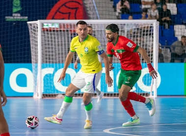
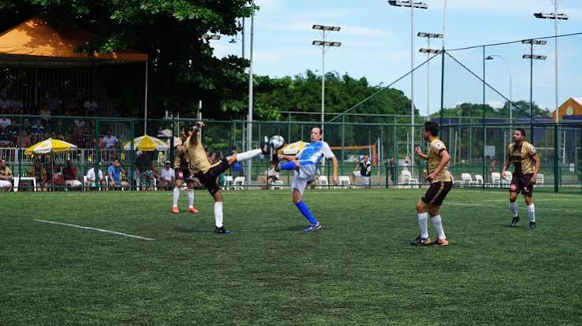
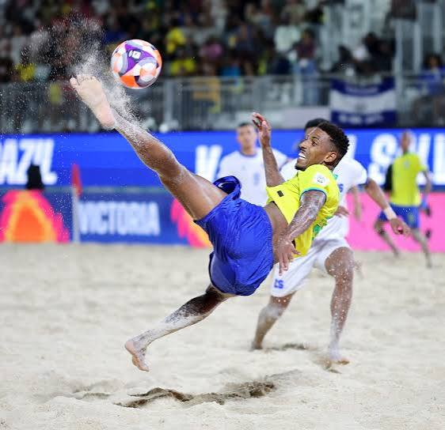
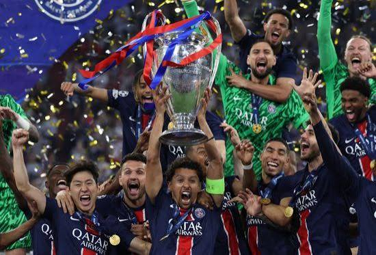
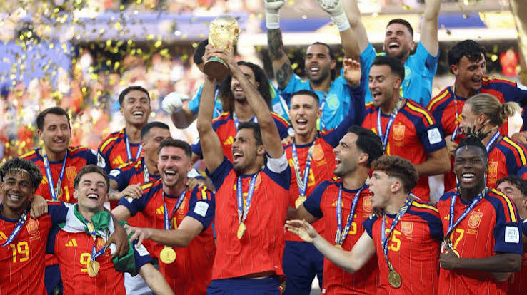
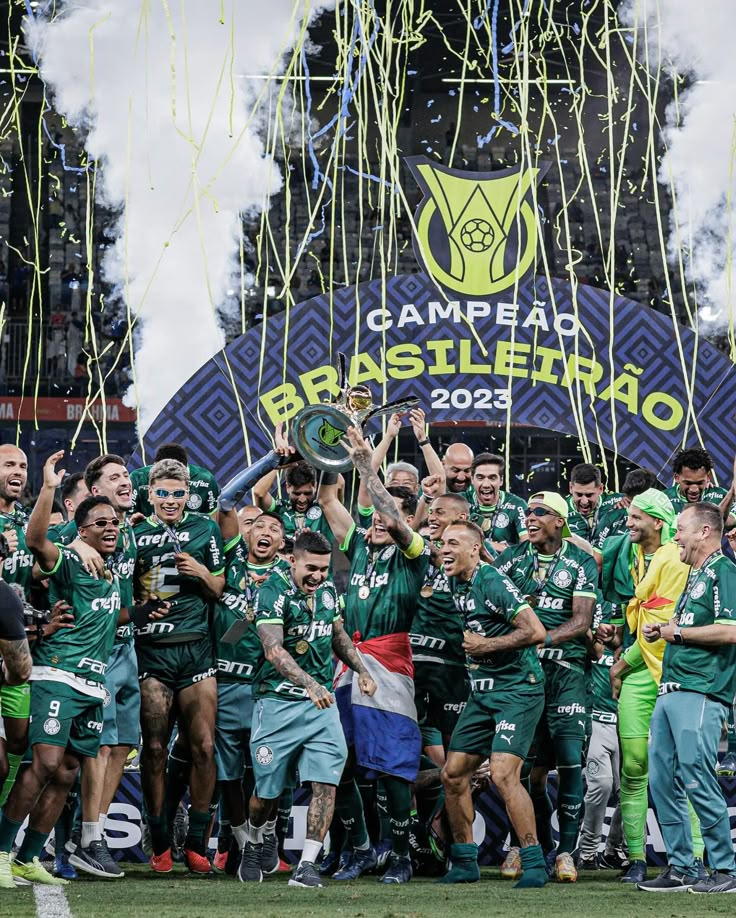
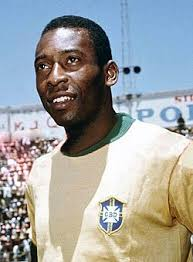
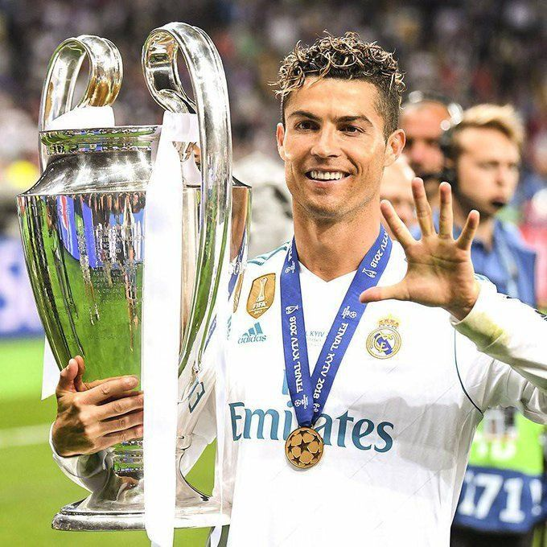
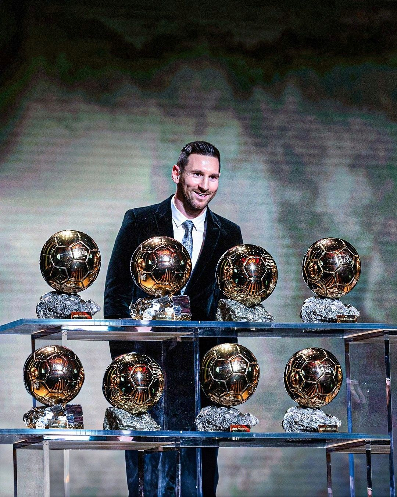

01
Futsal
Jogado em uma quadra e com menos jogadores, o futsal é marcado por muita velocidade, passes rápidos e decisões tomadas em poucos segundos.

Conheça, descubra e viva diferentes modalidades.
Paixão, emoção, grandes jogadas e aquele frio na barriga que só uma partida consegue trazer.
O futebol é um esporte coletivo disputado entre duas equipes. O objetivo é simples: colocar a bola no gol adversário e marcar mais gols que o outro time.
Mas, dentro de campo, as coisas ficam bem mais interessantes. Passe, drible, velocidade, estratégia e trabalho em equipe fazem parte de praticamente todas as jogadas.

O futebol tem uma história bastante antiga e passou por várias mudanças até chegar ao esporte que conhecemos hoje.
O futebol moderno começou a ganhar forma na Inglaterra durante o século XIX, quando novas regras foram criadas para organizar e padronizar a maneira de jogar.
Depois disso, o esporte começou a viajar pelo mundo. Hoje, ele faz parte da cultura de muitos países e é acompanhado por milhões de pessoas.
Fazer mais gols que o adversário até o fim da partida.
Cada time pode ter onze jogadores em campo, incluindo o goleiro.
Uma partida normalmente tem dois tempos de 45 minutos.
O goleiro é o único jogador que pode usar as mãos dentro da própria área, seguindo as regras do jogo.
O futebol não precisa acontecer sempre em um campo tradicional. Existem várias maneiras de jogar e cada uma tem seu próprio estilo.

Jogado em uma quadra e com menos jogadores, o futsal é marcado por muita velocidade, passes rápidos e decisões tomadas em poucos segundos.

Com campo menor e equipes reduzidas, o society deixa o jogo mais movimentado e faz os jogadores participarem bastante das jogadas.

Também conhecido como beach soccer, é jogado na areia e exige bastante controle da bola, equilíbrio e adaptação ao terreno.
Ao longo do ano, várias competições reúnem os melhores clubes e seleções. Algumas delas conseguem parar torcedores do mundo inteiro.

A UEFA Champions League reúne grandes clubes da Europa em uma disputa cheia de grandes partidas e momentos inesquecíveis.

De quatro em quatro anos, seleções de vários países se enfrentam em busca de um dos títulos mais desejados do futebol.

Um dos principais campeonatos do futebol brasileiro, reunindo clubes de diferentes partes do país em uma longa disputa.
O futebol já teve muitos craques. Alguns deles conseguiram marcar uma geração e deixar seu nome para sempre na história do esporte.

Pelé é um dos maiores símbolos do futebol brasileiro. Com muito talento e grandes conquistas, ajudou a colocar o Brasil ainda mais em destaque no futebol mundial.

Cristiano Ronaldo se destacou pela velocidade, força, finalização e vontade de competir. É um dos jogadores mais conhecidos do futebol moderno.

Messi ficou conhecido pelo controle de bola, pelos dribles e pela capacidade de criar jogadas que parecem impossíveis.
Jogadores que deixaram sua marca no futebol mundial e fizeram história dentro dos campos.
Relembre uma das finais mais importantes da história do futebol brasileiro: o jogo que garantiu ao Brasil o tão sonhado pentacampeonato mundial.
Minha relação com o futebol começou cedo, principalmente porque sempre foi um esporte muito presente no meu dia a dia.
Com o passar do tempo, comecei a acompanhar mais partidas, entender melhor as regras e prestar atenção nas diferentes formas de jogar. Isso fez meu interesse pelo esporte crescer.
Além de assistir, também gosto da experiência de jogar. O futebol me proporciona momentos de diversão e também me ensina que melhorar leva tempo, prática e vontade de continuar.

As regras do futebol moderno começaram a ser organizadas na Inglaterra durante o século XIX.
Hoje, o futebol é acompanhado por milhões de pessoas e está presente em praticamente todos os cantos do mundo.
O esporte ganhou diferentes versões ao longo do tempo, como futsal, futebol society e futebol de areia.